Gallery
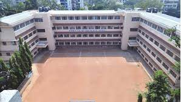 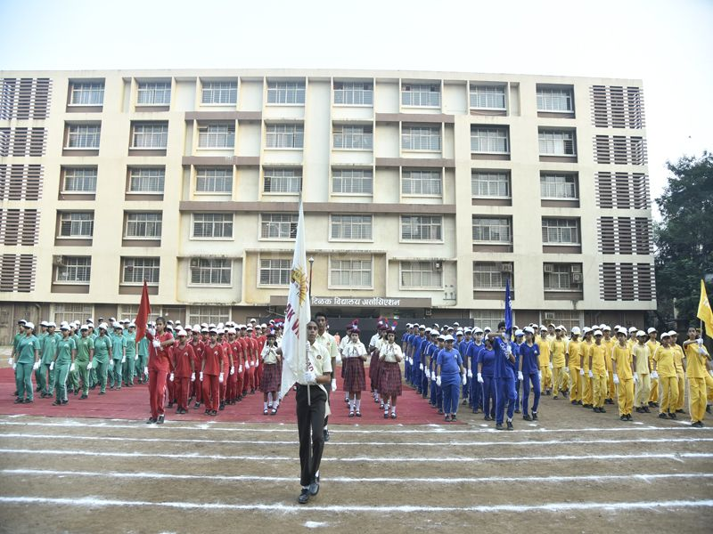 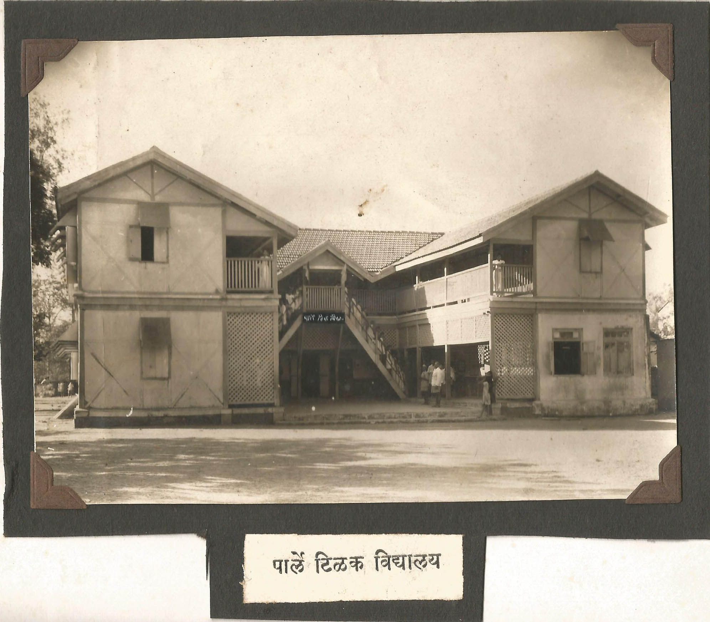 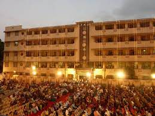 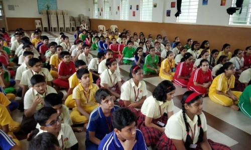
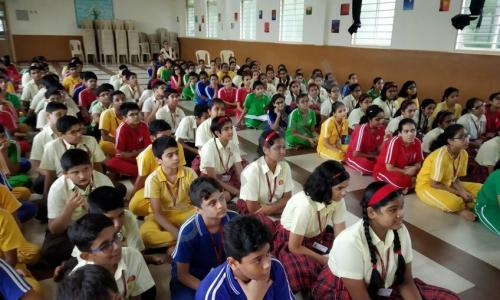
 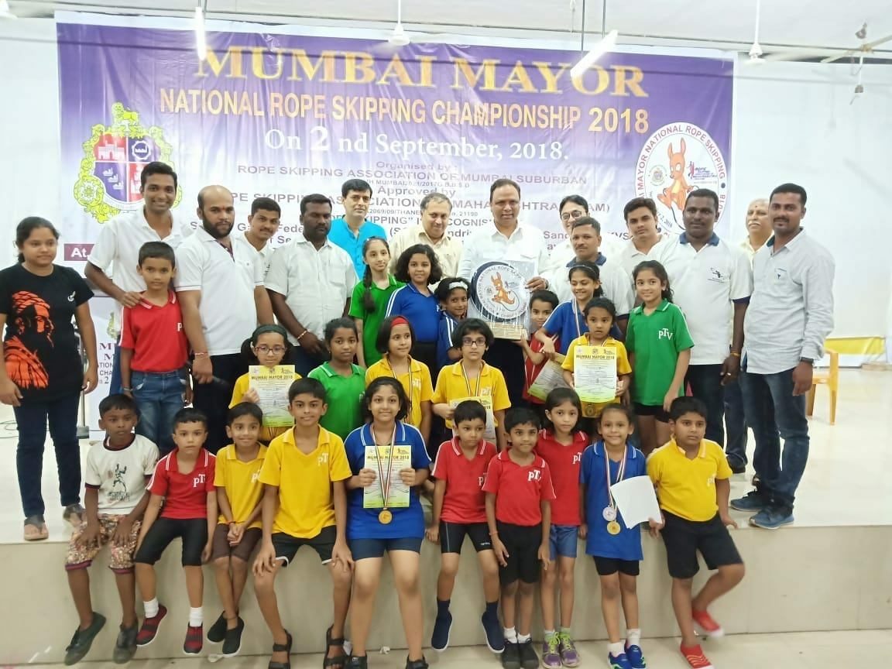
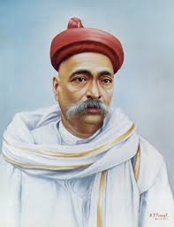
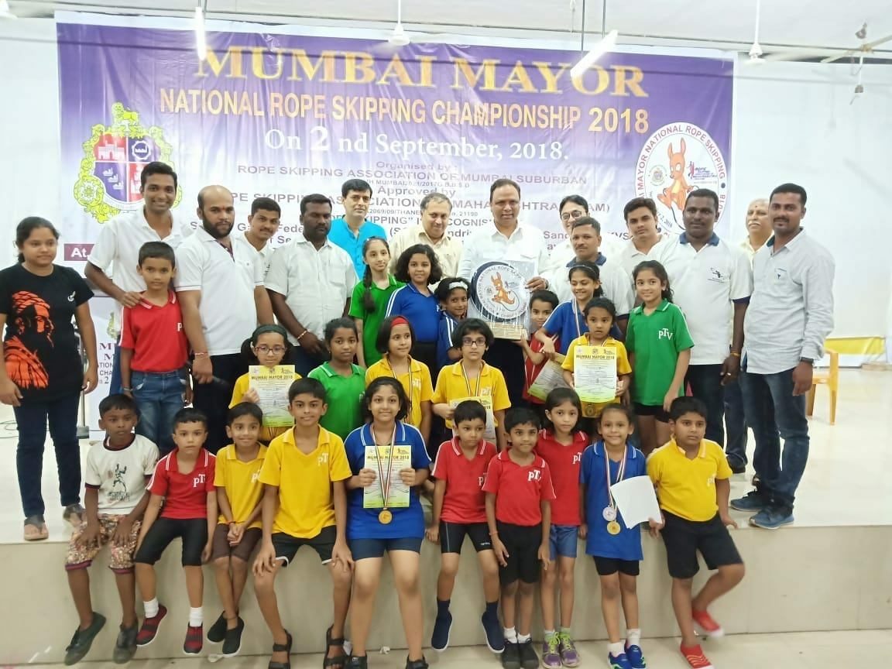
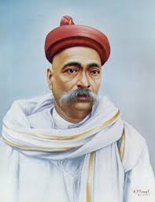
The Parle Tilak Vidyalaya (ICSE) is a co-educational institution, established in 2008 and was granted Permanent Affiliation by the ICSE Council on 27th May, 2016. Keeping in mind the growing demand of the community for the ICSE stream, the school started a shift system for Primary and Secondary in March,2017. The school enrols new admissions from Standard I to Standard VIII and the current strength of school is 1045 students. Our First batch comprising of 40 students passed the ICSE Board Examinations in May 2015 securing Cent Percent Results. The fine track record has been continued with our batches achieving outstanding results year after year. In keeping with the vision of the institution, the school imparts quality education in a facilitative, interactive and positive learning environment, incorporating collaborative and technology based strategic learning methodologies. Academic excellence interwoven with moral and intrinsic values, gives scope to realistic aspirations, making the students self-reliant and responsible global citizens. The ICSE building is a three storeyed complex with three gates to it. The large playground in the forefront gives way to the main entrance to the building. A well-furnished office, is situated on the ground floor followed by a State-of-Art Conference Room. The Counsellor’s Room with the assistance of the trained counsellor is on the ground floor. The rooms alongside the front facade of the building on the Ground Floor house the Geography Room with its audio-visual equipment along with other junior classes. An Activity Room has been allocated for indoor games like table tennis, chess and carom. The ground floor also has the ‘Get Well Room’ which is adequately equipped, with a trained nurse in attendance, for any minor injuries or sickness. The wide, majestic staircase leads to the first floor where the classrooms are located. The well-equipped laboratories for Physics, Chemistry and Biology which are in keeping with the specifications of the Council for the ICSE are on a floor above, with senior classes alongside. Another staircase in the right wing facilitates quicker assembly or dispersal. As such one staircase is earmarked for the boys and the other one is for the girls. Each classroom is well ventilated with a lot of natural light streaming through the doors and windows. A huge hall to seat the students for any function is in an entire wing, which of course will be used for the ICSE Board Examinations in the near future. Besides school inter-house activities, the Hall is utilised to conduct Karate, Yoga and Dance classes. Located on the first floor is a spacious library with internet facility for resource material and an exhaustive collection of reference books, periodicals, magazines and newspapers. Giving due importance to disaster management, the school has been provided with fire fighting equipment to meet any unforeseen situation.
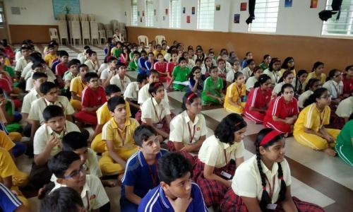
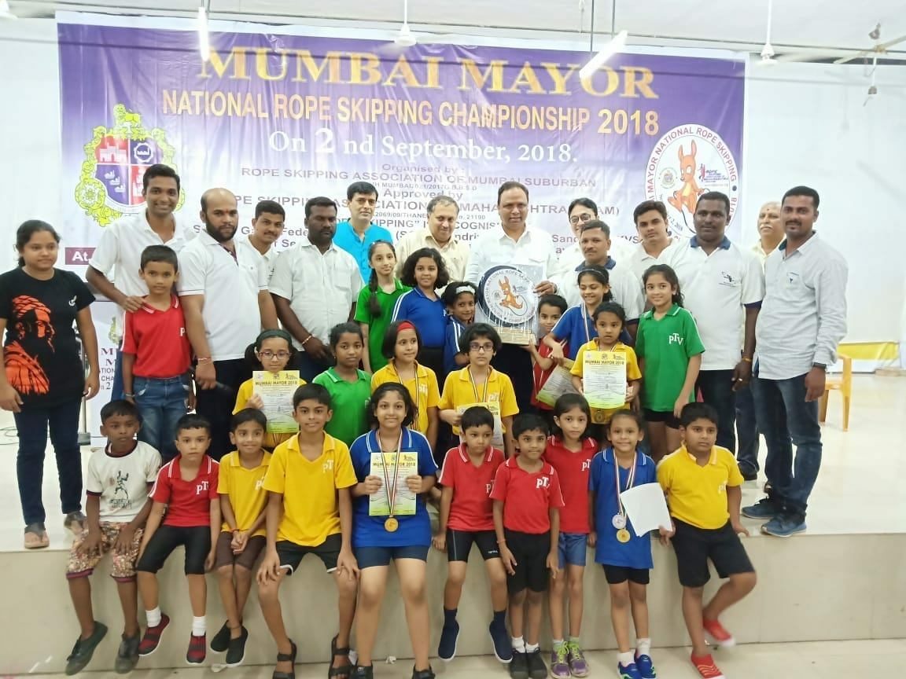
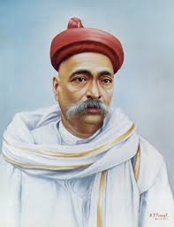